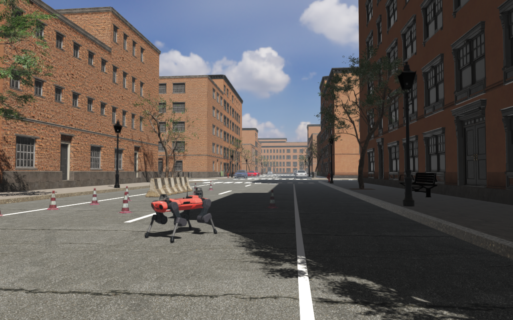

Rayrai Example: City From XML


Overview
The Rayrai Example: City world, loaded from one RaiSim XML world file. The XML
file describes only the robot: the ANYmal C, its initial state and its joint
PD gains. It includes the city’s .rscene file for everything else, so the
robot and the scene stay in separate files and either can be swapped without
editing the other.
rsc/xmlScripts/rscene/anymal_in_city.xml:
<raisim version="2.0.0">
<include value="[THIS_DIR]/../../city/rayrai_city.rscene"/>
<objects>
<articulated_system name="anymal" urdf_path="[THIS_DIR]/../../anymal_c/urdf/anymal.urdf">
<state qpos="-36, -1.6, 0.56, ..." qvel="0 0 0 ..."/>
<tuning control="1" kp="..." kd="..." qref="..." uref="..." feedforward="..."/>
</articulated_system>
</objects>
</raisim>
The C++ code only loads the file and opens a viewer:
auto world = std::make_shared<raisim::World>(
exampleRscPath(argv[0], "xmlScripts/rscene/anymal_in_city.xml"));
raisin::RayraiWindow viewer(world, 1280, 800);
The <include> builds the scene first: its solver settings, colliders and
traffic cones. The robot is added after it. The viewer draws every body of the
world, the robot included, and applies what only the scene file holds: the HDR
sky, the sun, the instanced buildings, the visual meshes of the street
furniture and cars, and the saved camera. The world is the one
Rayrai Example: City builds in C++, with the same objects and the same
trajectories.
Target
CMake target: rayrai_city_from_xml (C++20). Source:
examples/src/rayrai/worlds/rayrai_city_from_xml.cpp.
.rscene includes in XML world files, and viewers that apply their world’s
scene themselves, are not in a released package yet. CMake skips this target
when the installed rayrai does not apply a world’s scene; build it against a
RaiSim and rayrai built from source.
Run
The example takes no arguments. It finds the XML file in the rsc folder
that CMake copies next to the executables:
./build-examples/examples/rayrai_city_from_xml
On Windows, run rayrai_city_from_xml.exe from build-examples\bin. The
example renders in process. Meshes load asynchronously behind a loading bar;
physics starts once they are ready and then runs eight 2 ms steps per frame.
The scene needs rsc/city and, for its street trees, rsc/forest.
The same file runs in the TCP viewer without any C++ code:
rayrai_tcp_viewer --simulate rsc/xmlScripts/rscene/anymal_in_city.xml
See A robot in a scene for how an included scene and the XML file’s own settings combine, and World Configuration File for the XML format.